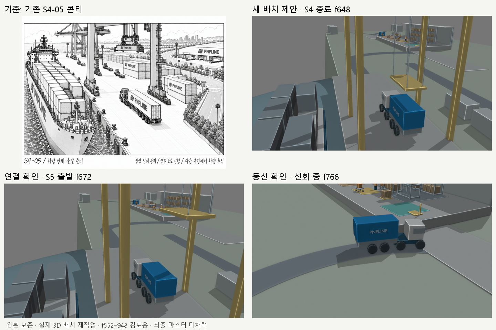
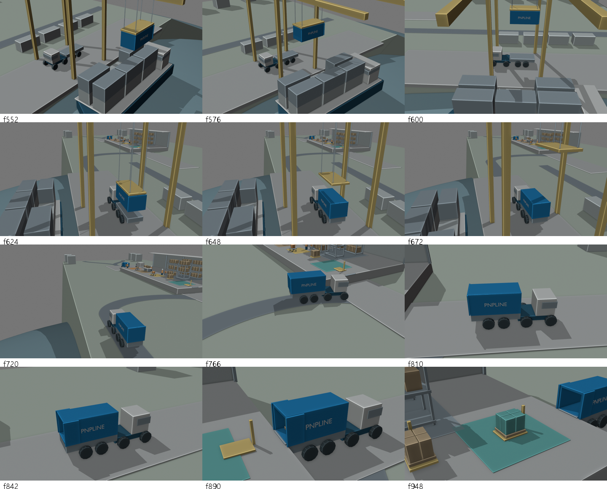

사용자의 통합 지시를 반영했습니다. 아래 자료는 이전 제안·진단 기록입니다.
선박 왼쪽 / 차량 후면 가운데 오른쪽 / 연결 도로와 창고 오른쪽 위. 영상은 저장된 제안본의 f552–948, 12fps 원속도입니다.
원본 마스터는 보존했습니다. 이 파일은 해당 구간 검토용이며, S1–S3·후속 S6–S7과의 전체 마스터 접합은 포함하지 않습니다. 최종 채택 대기.
Blender 제안본 · 검증 보고서

